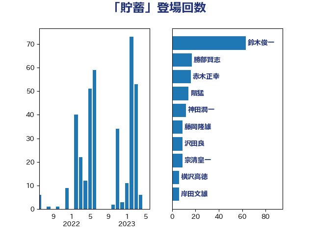

単語「貯蓄」

| 鈴木俊一 | 自由民主党 | 63 回 |
| 勝部賢志 | 立憲民主党 | 17 回 |
| 赤木正幸 | 日本維新の会 | 16 回 |
| 階猛 | 立憲民主党 | 14 回 |
| 神田潤一 | 自由民主党 | 12 回 |
| 藤岡隆雄 | 立憲民主党 | 9 回 |
| 沢田良 | 日本維新の会 | 9 回 |
| 宗清皇一 | 自由民主党 | 9 回 |
| 横沢高徳 | 立憲民主党 | 6 回 |
| 岸田文雄 | 自由民主党 | 6 回 |
| 山本太郎 | れいわ新選組 | 6 回 |
| 前原誠司 | 国民民主党 | 5 回 |
| 西田昌司 | 自由民主党 | 4 回 |
| 柴愼一 | 立憲民主党 | 4 回 |
| 岬麻紀 | 日本維新の会 | 4 回 |
| 山際大志郎 | 自由民主党 | 4 回 |
| 大家敏志 | 自由民主党 | 4 回 |
| 高木宏壽 | 自由民主党 | 3 回 |
| 鈴木敦 | 国民民主党 | 3 回 |
| 田村貴昭 | 日本共産党 | 3 回 |
| 江田憲司 | 立憲民主党 | 3 回 |
| 梅村聡 | 日本維新の会 | 3 回 |
| 後藤茂之 | 自由民主党 | 3 回 |
| 高見康裕 | 自由民主党 | 2 回 |
| 道下大樹 | 立憲民主党 | 2 回 |
| 西村康稔 | 自由民主党 | 2 回 |
| 藤丸敏 | 自由民主党 | 2 回 |
| 落合貴之 | 立憲民主党 | 2 回 |
| 若松謙維 | 公明党 | 2 回 |
| 米山隆一 | 立憲民主党 | 2 回 |
| 神田憲次 | 自由民主党 | 2 回 |
| 玉木雄一郎 | 国民民主党 | 2 回 |
| 熊谷裕人 | 立憲民主党 | 2 回 |
| 橋本岳 | 自由民主党 | 2 回 |
| 森屋隆 | 立憲民主党 | 2 回 |
| 末松義規 | 立憲民主党 | 2 回 |
| 小山展弘 | 立憲民主党 | 2 回 |
| 古川俊治 | 自由民主党 | 2 回 |
| 北神圭朗 | 無所属 | 2 回 |
| 高橋英明 | 日本維新の会 | 1 回 |
| 馬場成志 | 自由民主党 | 1 回 |
| 音喜多駿 | 日本維新の会 | 1 回 |
| 鈴木英敬 | 自由民主党 | 1 回 |
| 鈴木義弘 | 国民民主党 | 1 回 |
| 金村龍那 | 日本維新の会 | 1 回 |
| 金子恭之 | 自由民主党 | 1 回 |
| 野間健 | 立憲民主党 | 1 回 |
| 野田佳彦 | 立憲民主党 | 1 回 |
| 谷公一 | 自由民主党 | 1 回 |
| 藤巻健太 | 日本維新の会 | 1 回 |
| 萩生田光一 | 自由民主党 | 1 回 |
| 笠井亮 | 日本共産党 | 1 回 |
| 稲津久 | 公明党 | 1 回 |
| 秋野公造 | 公明党 | 1 回 |
| 福田昭夫 | 立憲民主党 | 1 回 |
| 福山哲郎 | 立憲民主党 | 1 回 |
| 石原正敬 | 自由民主党 | 1 回 |
| 石井章 | 日本維新の会 | 1 回 |
| 田村まみ | 国民民主党 | 1 回 |
| 田島麻衣子 | 立憲民主党 | 1 回 |
| 清水貴之 | 日本維新の会 | 1 回 |
| 浅田均 | 日本維新の会 | 1 回 |
| 池下卓 | 日本維新の会 | 1 回 |
| 櫻井周 | 立憲民主党 | 1 回 |
| 横山信一 | 公明党 | 1 回 |
| 森本真治 | 立憲民主党 | 1 回 |
| 森屋宏 | 自由民主党 | 1 回 |
| 枝野幸男 | 立憲民主党 | 1 回 |
| 松本剛明 | 自由民主党 | 1 回 |
| 岡本あき子 | 立憲民主党 | 1 回 |
| 山口壯 | 自由民主党 | 1 回 |
| 小沼巧 | 立憲民主党 | 1 回 |
| 小倉將信 | 自由民主党 | 1 回 |
| 寺田静 | 無所属 | 1 回 |
| 宮下一郎 | 自由民主党 | 1 回 |
| 奥下剛光 | 日本維新の会 | 1 回 |
| 塩村あやか | 立憲民主党 | 1 回 |
| 堂込麻紀子 | 無所属 | 1 回 |
| 土田慎 | 自由民主党 | 1 回 |
| 吉田久美子 | 公明党 | 1 回 |
| 吉田はるみ | 立憲民主党 | 1 回 |
| 井林辰憲 | 自由民主党 | 1 回 |
| 中西健治 | 自由民主党 | 1 回 |
| 下条みつ | 立憲民主党 | 1 回 |
| 三木圭恵 | 日本維新の会 | 1 回 |
| 三宅伸吾 | 自由民主党 | 1 回 |
| たがや亮 | れいわ新選組 | 1 回 |